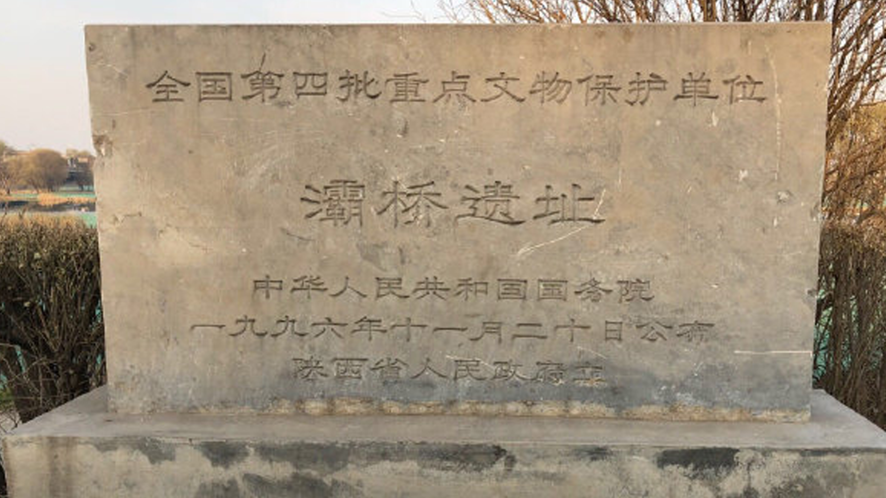
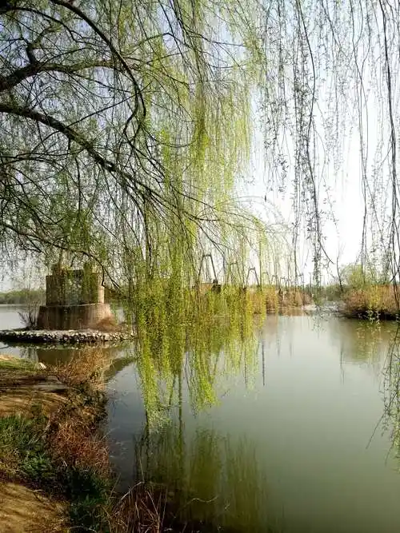
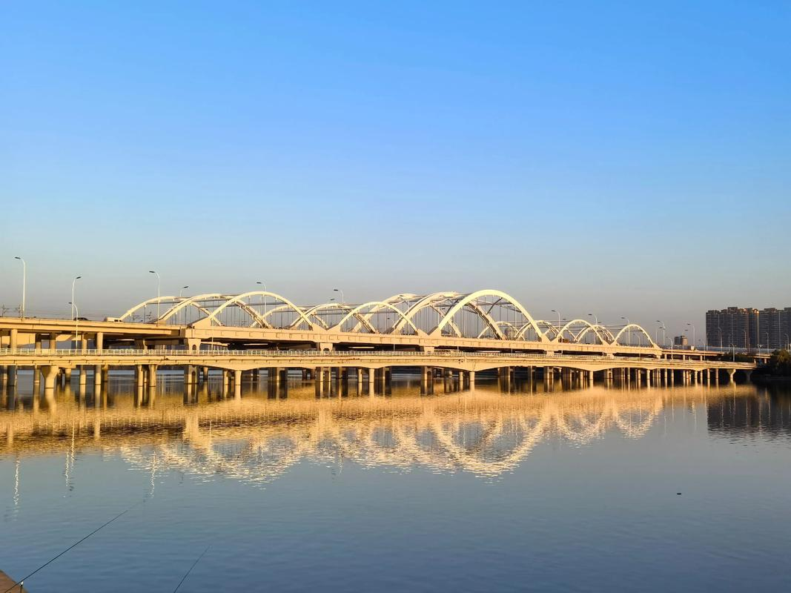
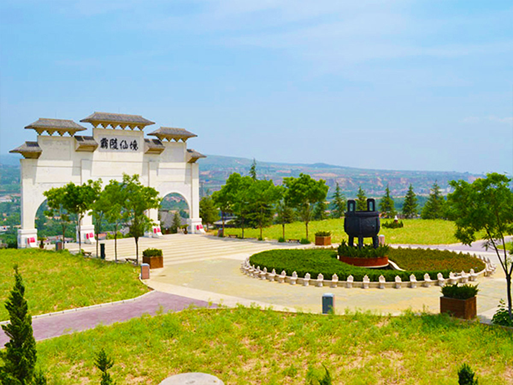

灞桥位于西安城东约10公里的灞河之上，自古以来就是长安通往东方各地的必经之处。从秦汉到唐宋，灞桥一直是人们离京远行的第一站。唐代时，灞桥两岸广植垂柳，每当春日，柳絮漫天飞舞，纷纷扬扬如同白雪——"灞柳风雪"由此得名，成为关中八景中最富诗情画意的一景。
"柳"与"留"谐音，折柳赠别成为中国人最动人的送别仪式之一。亲友远行，送行者送至灞桥，折下一枝柳条赠予行者，以柳寓"留"——虽知留不住，仍以柳寄情。李白在《忆秦娥》中写道："箫声咽，秦娥梦断秦楼月。秦楼月，年年柳色，灞陵伤别。"灞桥的柳，早已超越了自然景观，成为中国文学中"离别"意象的永恒符号。

灞桥的建桥历史可追溯至春秋时期。秦穆公为彰显霸业，将滋水改名"霸水"，在河上建桥名"霸桥"（后因水名加三点水偏旁为"灞"）。隋开皇三年（583年），在汉桥之南新建一座多孔石拱桥，这是世界上已知最早的石拱桥之一。2004年，考古工作者在灞河河床中发现了隋唐灞桥遗址，出土了11座保存完好的石砌桥墩和大量唐代遗物，证实了这座千年名桥的辉煌。
如今的灞桥是20世纪重建的公路桥，但灞河两岸的柳树依然茂密，春日柳絮纷飞的景象延续至今。桥头新建有灞桥遗址公园，将考古遗址与现代园林相结合，成为西安东部的一处文化休闲胜地。
"昔我往矣，杨柳依依。今我来思，雨雪霏霏。" —— 《诗经·小雅·采薇》
中国古代最早的柳树送别诗，灞桥折柳之风的文学源头。



| 地址 | 西安市灞桥区灞河沿岸（灞桥遗址公园） |
|---|---|
| 开放时间 | 遗址公园全天开放 |
| 门票 | 免费 |
| 交通 | 地铁 1 号线纺织城站换乘公交至灞桥；或自驾沿东三环至灞河大桥 |
| 小贴士 | 最佳观赏"灞柳风雪"的季节为4月中下旬（柳絮纷飞期）；可结合灞桥湿地公园（免费）和世博园一同游览 |